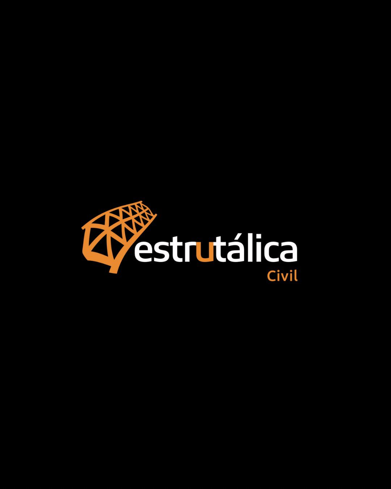
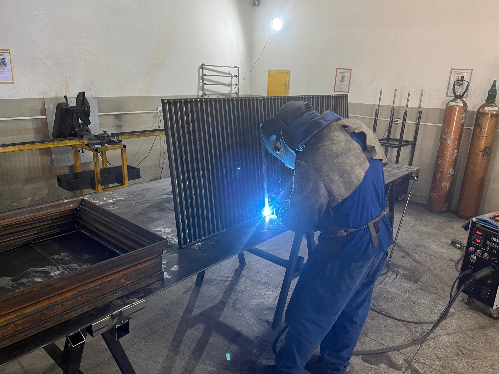

Gradis e grades metálicas
Proteção, delimitação e segurança para diferentes áreas.

SERRALHERIA INDUSTRIAL SOB MEDIDA
Capacidade, engenharia e solução para projetos de maior porte.
Soluções personalizadas para empresas, indústrias, incorporadoras, condomínios e projetos corporativos. Do entendimento da demanda à instalação.
Solicitar cotaçãoApresente seu projeto à nossa equipe pelo WhatsApp.

DA ENGENHARIA01 / O SEU PROJETO EM PRIMEIRO LUGAR
Medidas, fixações, instalação e especificações precisam ser respeitadas. Quando isso não acontece, a serralheria pode comprometer muito mais do que o acabamento.
Na Estrutálica Civil, o trabalho começa entendendo a sua necessidade. Engenharia, planejamento, produção e instalação trabalham em conjunto para transformar demandas técnicas em soluções executáveis.
Você traz o desafio.
Nossa equipe trabalha na solução.
02 / SOLUÇÕES SOB MEDIDA
Da proteção de áreas aos acessos e projetos especiais: fabricação personalizada para a aplicação que você precisa.
Proteção, delimitação e segurança para diferentes áreas.
Fabricação e instalação considerando projeto, aplicação e requisitos técnicos.
Soluções para circulação, escadas e acessos em ambientes coletivos.
Estruturas personalizadas para as dimensões e condições de cada projeto.
Acessos com corrimãos, guarda-corpos e fechamentos conforme a necessidade.
Soluções metálicas para proteção e controle de acesso.
Fabricação de acordo com as dimensões e necessidades da sua operação.
Estruturas personalizadas para áreas externas, acessos e coberturas.
Projetos especiais para demandas que pedem uma solução específica.
Tem uma demanda diferente? Conte o que seu projeto precisa.
Falar com nossa equipe03 / RESPONSABILIDADE TÉCNICA
Guarda-corpos, corrimãos e elementos de proteção precisam considerar a aplicação, as especificações do projeto e as normas técnicas aplicáveis da ABNT.
Segurança e conformidade começam nas decisões tomadas antes da fabricação.
Orientação técnica durante o desenvolvimento para apoiar as decisões do projeto.
Requisitos técnicos considerados conforme a função e a aplicação de cada solução.
Medidas, fabricação, fixação e instalação alinhadas ao escopo definido.
04 / CAPACIDADE PARA ENTREGAR
Demandas de maior porte exigem organização, capacidade produtiva e gente preparada.
Espaço e estrutura produtiva preparados para receber demandas maiores e produções em escala.
Você não precisa dar sinal no ato da contratação.
Acompanhamento técnico para transformar necessidades em soluções executáveis.
Profissionais experientes na fabricação e instalação das soluções.
Uma equipe preparada para entender imprevistos, tratar desafios e buscar a solução.
05 / COMO FUNCIONA
Um processo que conecta a necessidade da sua empresa à execução do projeto.
Inicie seu cadastro pelo WhatsApp. Envie os dados da empresa e conte o que precisa.
Nossa equipe avalia desenhos, medidas, especificações e condições da aplicação.
Engenharia e produção alinham a forma de execução e o escopo do serviço.
A solução é produzida sob medida em nossa estrutura industrial.
A equipe realiza a instalação conforme as condições e o escopo definidos.
Se surgir um desafio, você tem uma equipe preparada para responder.
Para começar, tenha em mãos fotos, medidas ou desenhos do projeto.
Apresentar meu projeto06 / NA PRÁTICA
Registros de fabricação e soluções do portfólio da Estrutálica. O cuidado aparece em cada detalhe.


Em Guarulhos, nossa estrutura atende empresas, indústrias, incorporadoras, condomínios e projetos corporativos que precisam de serralheria especializada.
07 / PERGUNTAS FREQUENTES
Atendemos empresas, indústrias, incorporadoras, condomínios e projetos corporativos, com foco em soluções sob medida e demandas de maior porte.
Sim. Contamos com aproximadamente 3.000 m² de área fabril e estrutura preparada para demandas maiores. Nossa equipe analisa o escopo e as necessidades de cada projeto.
Sim. Há acompanhamento de engenharia durante o desenvolvimento da solução, apoiando as decisões técnicas e o planejamento da execução.
Os serviços são desenvolvidos com atenção às normas técnicas aplicáveis a cada solução e às especificações do projeto, considerando sua função e aplicação.
Não é necessário dar sinal no ato da contratação. Nossa equipe apresenta as condições comerciais junto à proposta do seu projeto.
Fale com nossa equipe pelo WhatsApp, informe seus dados e os da empresa e apresente a demanda. Fotos, medidas, desenhos e especificações ajudam na análise.
Realizamos fabricação e instalação conforme o escopo definido para cada projeto. As condições são alinhadas com nossa equipe durante a elaboração da proposta.
Uma grande demanda, um projeto especial ou um problema para resolver. Cadastre sua empresa pelo WhatsApp e conte com a Estrutálica Civil.
Solicitar cotaçãoAtendimento direto com nossa equipe.